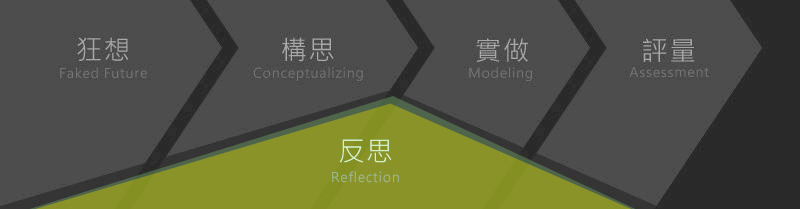

在X書院中，來自不同院系的學生會共宿一年，透過各式住宿學習設計，師生、同儕將於生活中密切的交流互動，X書院期望為學生帶來「家」的歸屬感。
除此之外，「X書院」亦規劃了3門必修課程及一門選修課（如下表所示），統合通識教育、專業教育與「X書院」的實驗體驗教育，為學生建構一個見樹又見林的學習場域；同時提供實做環境，導入未來文化與未來產業趨勢，引導學生在做中學、教中學的過程中，培養熱情、勇氣、動機以及面對未來的執行力，找到「個別的未來（x）」與「集體的未來（X）」。
除此之外，「X書院」亦規劃了3門必修課程及一門選修課（如下表所示），統合通識教育、專業教育與「X書院」的實驗體驗教育，為學生建構一個見樹又見林的學習場域；同時提供實做環境，導入未來文化與未來產業趨勢，引導學生在做中學、教中學的過程中，培養熱情、勇氣、動機以及面對未來的執行力，找到「個別的未來（x）」與「集體的未來（X）」。
科目/課程簡介
- 問題、創意與實踐（3學分必修課）
- 課程目的為運用影像、圖像、聲音與肢體來重新體驗個體的思考、情感、感官與直覺，不必遵循唯一做法，也沒有標準答案。以101學年第一學期為例，由體育室呂潔如、傳播學院嚴曉翠及教育學院林顯達三位老師合開，帶領同學認識身心學（somatic psychology）與設計思考（design thinking）。
- X計畫（3學分必修課）
- 課程目的為在資源有限的條件下，解決真實情境中的問題，學習如何發揮創意、整合知識、發揮團隊精神，提出專案規劃、具體實踐並評估成果。以101學年第二學期為例，與傳播學院合作，創作、出版並行銷「我爸爸」漫畫書季刊。
- 服務學習課程-營造Χ書院生活學習圈（0學分必修課）
- 由學生自組團隊，針對「自在如家」與「出門冒險」兩個主題設計服務目的、對象與內容。以100學年為例，在「自在如家」的部分，完成了「浴室文學」、團膳、開學音樂會以及招生甄選等專案；在「出門冒險」的部分，與本校秘書處合作創作「政大年度行事曆」與「尋找政大頭APP」，與肯園香氣私塾合作研發政大專屬氣味「政氣歌」精油以及與教育部未來想像與創意人才培育計畫合作執行「大學小革命」夏日營隊等。
- 溝通、合作與領導（2學分選修課）
- 經過審核，始得修課。透過課程、住宿與專案，展開溝通、合作與領導能力的學習。
學習歷程架構
「X書院」借用Univ. of Goldsmiths的創造力評量觀點，把「X書院」的學習定義為一個從「狂想（Faked Future） 構思（Conceptualizing） 實做（Modeling） 評量（ Assessment），並在過程中不斷反思（Reflection）」的歷程（如下圖所示）。
